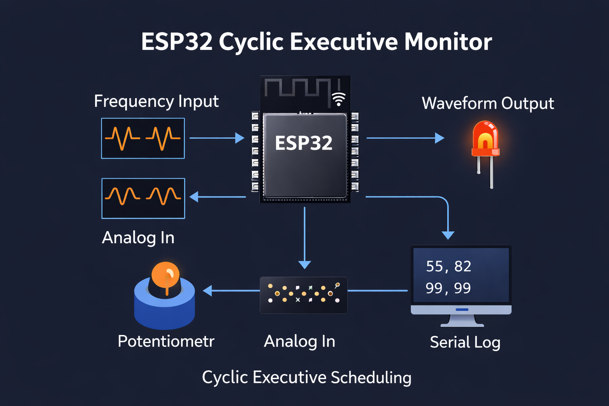

ESP32 Cyclic Executive Real-Time System
Hard real-time cyclic executive scheduler on ESP32 in bare-metal C — no RTOS. Executes deterministic waveform generation, frequency measurement on two digital inputs, analog signal monitoring with moving-average filtering, and periodic serial logging. Later extended with FreeRTOS multitasking using queues and semaphores, comparing both scheduling approaches under real hardware constraints.
Embedded C
FreeRTOS
ESP32
Real-Time Systems
Timing Analysis
Bare-Metal